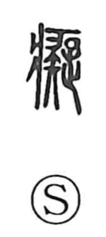

痴

Uncategorized
Kun: | On: chi
foolishness ・ idiocy ・ madness
Explanation
Shirakawa notes that the traditional form is 癡, composed of the sickness radical 疒—picturing a patient lying on a bed—and 疑, which portrays a person with a staff turning back in hesitation, embodying doubt and perplexity. Joined, they express a mind afflicted in that wavering state, unable to judge or decide, and so the character came to mean dullness and slowness, and by extension madness.